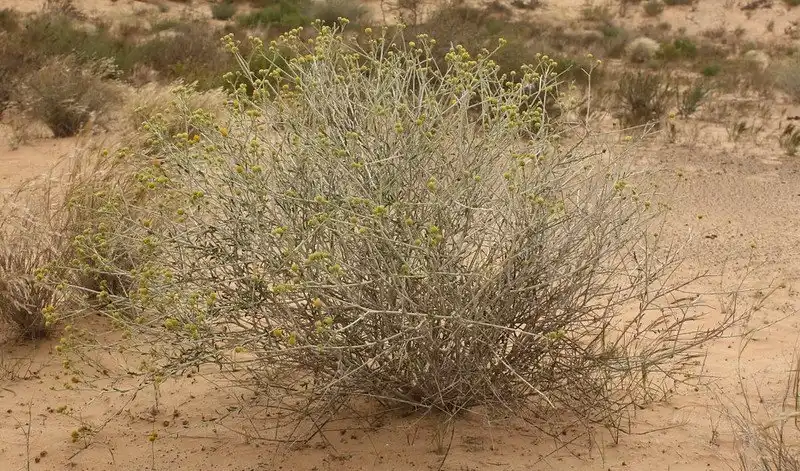
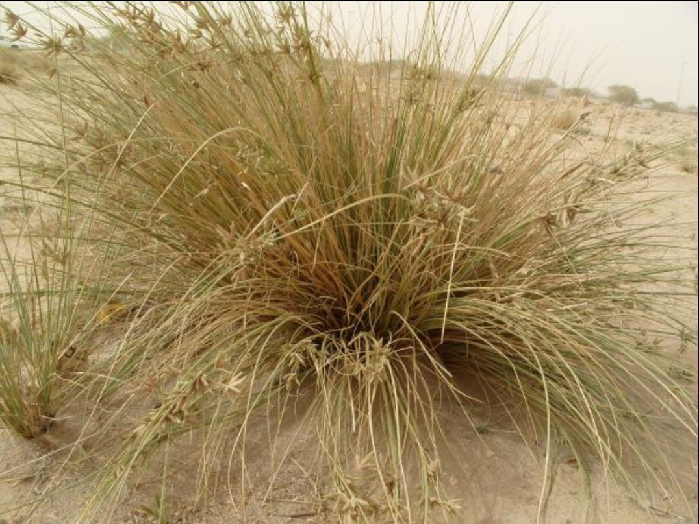
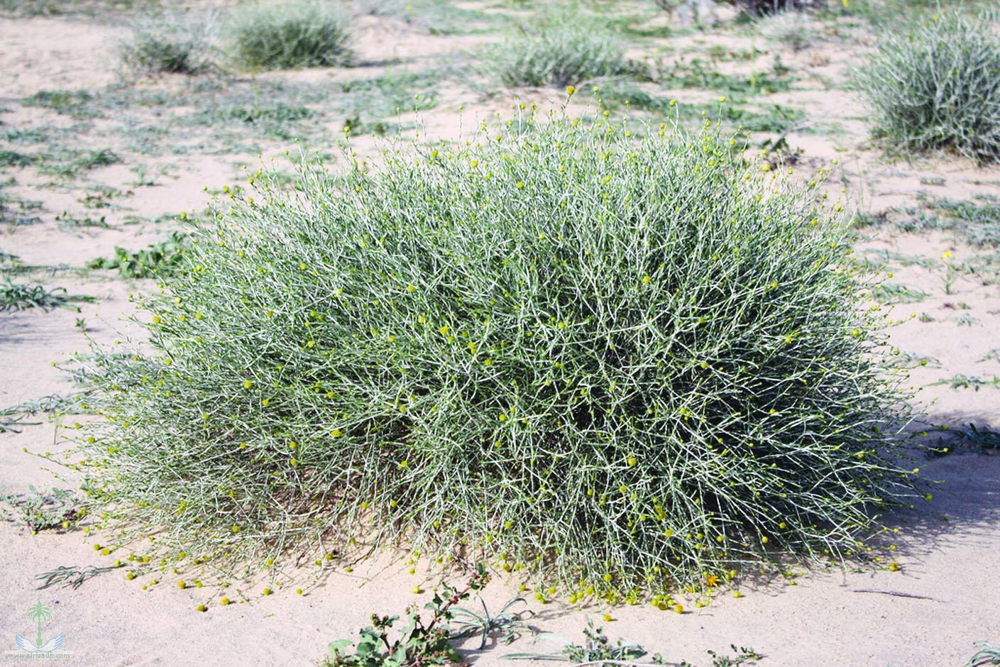
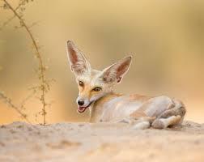
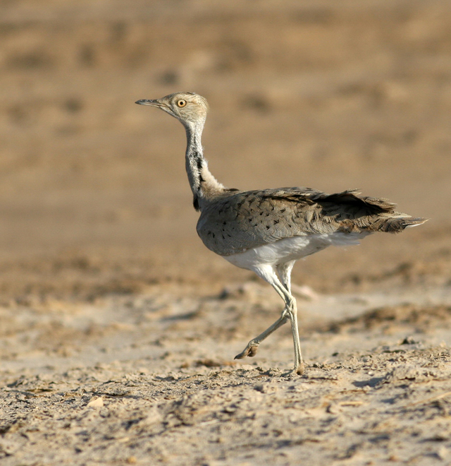

A Brief About Kuwait:
Kuwait may be small in size, but she has a big and compassionate heart

Arfaj:
A bushy perennial shrub approximately 80 cm high. The leaves are samll and narrow. It is the national flower of Kuwait. It is considered one of the main desert forage plants for camels and sheep. Its flowers and fruits appear from January to May.

Thandah:
A perennial, tufted plant grows up to 60 cm tall with woolly root fibers. Flowers and fruits appear in May to June. Brown or green flower spikes. Leaves are stiff, bright green, grooved and curvy

Rimth:
A diffuse, perennial, low woody shrub that grows up to 60 cm high. Flowers with protruding yellow stamens appear on stems with jointed segments. Leaves are scale like with pink or fawn coloured papery fruits. Flowers appear in September to October.

Red Fox:
is similar in color to the common red fox. However, this fox is more adapted to desert life than its parent species, with its ears being much larger, and its body being much smaller than that of the red fox.

Macqueen's Bustard:
Irregular winter visitor in very samll numbers. Formerly a resident breeder that was fairly common up until the 1950's. It has seen a dramatic population decline primarily due to overhunting across the region.
Common Kestrel:
Unccommon passage migrant and winter visitor; also a scarce resident and local breeder. One of the most widespread small falcons; feeds on a variety of prey including rodents, reptiles, birds and large insects.Protected Areas of Kuwait
You can find your destination by using this active map